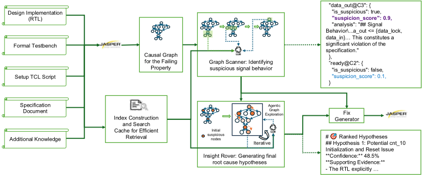
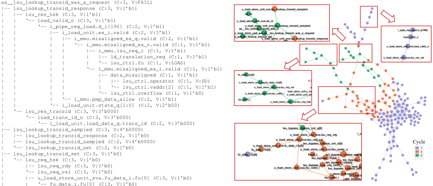

FVDebug：一个由 LLM 驱动的、面向 Formal Verification 失败自动根因分析的调试助手
Formal Verification 失败调试约占验证工程师 50% 的时间，而现有商业工具仅提供波形可视化、缺乏自动因果推理。FVDebug（NVIDIA）提出端到端自动化根因分析流程：先通过 Jasper 的 visualize -why 递归查询把 counter-example 构建为因果 DAG，再用 for-and-against prompting 的 Graph Scanner 批量评估可疑节点以克服 LLM 确认偏误，随后 Insight Rover 以 tree-of-thought 式 agentic 探索维护多个竞争假设并生成因果叙事，最后 Fix Generator 用 5 种上下文策略集成生成 RTL 修复并重跑 formal 验证确认。在 38 个真实硬件失败上达到 0.956 Quality@Best、71.1% Pass@1 与 86.8% Pass@5；在 CVA6 RISC-V 处理器两个失败及两个生产级私有 CEX 上验证了从学术基准到工业设计的适用性。消融实验证明因果图结构、叙事构建与集成策略各自贡献显著。
Formal property 失败后，工程师需人工回溯多周期 counter-example、分析波形并交叉对照 RTL 与设计规格以定位根因，单个 bug 耗时数小时到数天，约占验证工程师 50% 的时间；现有商业工具只做波形可视化，已有 LLM 方法将波形当平坦文本处理、缺乏 cycle-accurate 时序推理，易产生误报或漏掉多周期因果链。
四阶段流水线：(1) Causal Graph Synthesis——从失败 property 出发，递归调用 Jasper 的 visualize -why 命令（默认 trace 深度 20 cycles）构建以 signal@cycle=value 为节点、因果依赖为边的图，并合并重汇聚路径为 DAG；(2) Graph Scanner——按拓扑序以 token-aware batching 批量调用 LLM，对每个节点强制给出至少两条支持与两条反对可疑性的论证、0.0-1.0 可疑度评分及 root cause/symptom 分类；(3) Insight Rover——受 tree-of-thought 启发的 agentic 探索，维护至少 3 个竞争假设并在因果图上智能选择探索节点，最终按充分性、证据质量等维度排序；(4) Fix Generator——5 种上下文策略（full/suspicious/narrative/minimal/best-of）集成生成修复，经多级校验、去重与共识评分（min(0.2k, 0.6)）后输出 diff-ready patch 与结构化根因报告。
SVA-Eval-Human 基准（38 个真实硬件失败，底层 LLM 为 o3-mini）：Quality@Best 0.956、Pass@1 71.1%、Pass@5 86.8%
因果结构消融：Flat Trace Analysis 仅 0.474 Quality@Best，因果图方法为 0.795-0.956，证明显式因果关系是根因识别的关键
移除 Insight Rover 导致性能显著下降；单策略 fix 生成使 Pass@5 从 0.868 降至 0.763
CVA6 RISC-V 处理器两个失败（MMU Ghost Response、LSU Transaction ID Mismatch）：Quality@Best 0.713；LSU 失败的完整因果图达 20 层、170 节点
两个生产级私有 CEX：CEX-1（FV testbench 内部 token 计数遗漏 mesh 输入路径）获专家 'Excellent Match'，CEX-2（缺失输入约束导致 FIFO overflow/backpressure 失效）获专家 'Strong Match'
据作者称是首个覆盖从 CEX 到已验证 patch 的完整 FV debug 闭环、并贴近工业工程实践的系统；区别于把波形当平坦文本的已有 LLM 方法，其将 CEX 显式结构化为因果 DAG，并引入 for-and-against prompting（强制正反双方论证以克服确认偏误）与 agentic 多假设叙事探索，模拟人类工程师逐步精炼假设的调试推理过程。
相关度级别：high
命中能力域：2.5 形式验证与等效性检查 | 2.4 设计验证方法学 | 2.7 EDA/验证自动化与 AI 辅助
理由：团队在 LPDDR5X/HBM4/UCIe 等 IP 交付中大量使用 SVA + Jasper 类 formal 验证，FV 失败的 CEX 根因分析是真实且高频的耗时瓶颈（论文引用调试占验证工程师约 50% 时间）。论文直接命中 2.5 形式验证（CEX 分析、property 失败调试）、2.4 验证方法学（debug 方法学、bug triage、验证-设计协作报告）与 2.7 AI 辅助验证自动化（LLM 流水线、可复用自动化框架）三个能力域，且已在生产级设计上验证，方法可迁移到团队的 formal 回归与 debug 流程。
建议动作：深入精读并做内部分享
形式验证（FV）是现代超大规模集成电路（VLSI）设计的基石，它使用数学方法证明硬件设计符合其规范 [10, 11]。这些规范通过形式化属性来刻画——通常以 SystemVerilog 断言（SVA）[27] 的形式编写——用以表达预期的设计行为，例如“一个请求必须在 3 个周期内得到应答”或“FIFO 永远不应溢出”。当设计违反此类属性时，业界标准的模型检测工具（如 Jasper [25] 和 VC Formal [23]）会生成一个反例（CEX）：一条具体的执行轨迹，逐周期地展示信号值以证明该违例。该 CEX 通常以波形形式可视化，提供了一个明确的失效场景，揭示预期行为与实际行为在何处出现分歧。
然而，解读 CEX 是一项众所周知高度依赖人工且耗时的任务，调试占用了验证工程师近 50% 的时间——这是他们单项耗时最多的工作 [8, 16]。工程师必须在波形中反向追踪信号依赖关系、交叉比对寄存器传输级（RTL）逻辑、查阅规范，并综合这些信息以定位根本原因——这一过程需要对设计意图与实现有深入理解 [15]，可能使开发停滞数小时乃至数天。商用工具在波形可视化方面表现出色 [24,25]，但几乎不提供自动化推理；因果分析的负担仍然由人工承担。
近年来基于大语言模型（LLM）的方法虽然前景可观，但尚未捕捉到这一工作流程的细微之处。其中许多方法改编自软件调试，未能处理周期精确时序等硬件特有的概念 [5,17,22]；另一些方法则依赖对原始轨迹文件采用过于简单的提示策略 [13, 14]。根据我们的实证观察，这些方法常常产生误报——将良性行为标记为可疑——或因无法追踪多周期因果链而漏掉真正的根本原因。
我们假设，一个有效的自动化调试器必须模拟人类专家那种结构化、多信息源的推理过程。它不应把 CEX 视为扁平的事件序列，而必须首先将其结构化为一种能够显式刻画因果关系的表示。我们提出从失效轨迹构建因果图（Causal Graph），其中节点表示信号事件（"signal@cycle=value"），有向边表示它们之间的直接因果依赖。这种结构化的失效“心智模型”支持对失效链进行系统化追踪——恰如工程师在头脑中反向遍历波形以定位根本原因。
我们提出 FVDebug——首个端到端的自动化系统，它（i）构建这样的因果心智模型，并（ii）通过一条刻意模仿验证工程师工作方式的 LLM 流水线对其加以利用：
提示方案强制进行均衡评估——迫使 LLM 在标记可疑行为之前权衡双方的证据。
本文的主要贡献如下：(1) 据我们所知，FVDebug 是首个切实可用的调试器，它将整个形式验证（FV）调试循环——从反例（CEX）到经验证的补丁——完全自动化，同时紧密模拟工业界的工程实践。(2) 我们提出了多项用于 FV 调试的新技术，包括从反例合成因果图（causal graph synthesis）、用于平衡信号分析的正反方提示（for-and-against prompting），以及模拟人类工程师逐步细化假设过程的智能体式叙事探索（agentic narrative exploration）。(3) 我们构建了一条从失效轨迹到人类可读报告的完整流水线，报告内容包含经过排序的根因假设、支持性证据、因果链时间线以及具体的寄存器传输级（RTL）修复方案——从而实现验证工程师与 RTL 设计者之间的有效协作。(4) 在 38 个真实硬件失效案例上，FVDebug 在根因识别方面达到 95.6% 的假设质量，Pass@1 修复率为 71.1%，Pass@5 修复率为 86.8%。我们还在真实世界更大规模设计中所发现的失效上演示了 FVDebug 的应用。
诸如 LLM-HDL 之类的静态修复流水线利用检索增强提示来定位并修补功能性 RTL 缺陷 [20]。VeriDebug 将对比嵌入与生成式编辑相结合，以统一故障定位与修复 [29]。在 RTL 之外，HLSDebugger 将编码器-解码器模型适配到高层次综合代码，显著提升了逻辑缺陷的修复效果 [28]。尽管这些方法 [9,12,21,31] 对代码可见的故障行之有效，但它们缺乏时序推理能力，无法分析仅在执行轨迹中才显现的失效。
以轨迹为中心的方法将断言失效或反例直接纳入 LLM 提示中。AssertSolver 通过对比“正确与错误”的轨迹进行学习，以诊断仿真时的断言失效 [33]。GenAI-Induction 提出辅助不变式，以解除形式化 𝑘-归纳所受的阻塞 [13]。多智能体框架 Saarthi 以闭环方式迭代地证明属性并分析失效的反例（CEX）[14]。这些技术通常仍将波形视为扁平文本，限制了在多周期失效上的根因分析保真度；我们的工作则通过显式因果图来解决这一问题。
主流电子设计自动化（EDA）平台——Cadence Indago、Synopsys Verdi、Cadence JasperGold——提供了丰富的波形查看器与覆盖率仪表盘，但将因果推理留给工程师完成 [24-26]。目前已有多家初创公司宣传 AI 驱动的寄存器传输级（RTL）调试，而通用编码副驾驶则展示了智能体式的软件调试工作流 [1-3,7]。这些系统的技术细节仍然稀缺，而将其适配到以波形为中心的硬件失效上并非易事——这凸显了开展更深入的、图结构化研究的必要性。
当形式化属性验证失败时，模型检测器产生的反例表现为随时间变化的扁平信号序列，掩盖了其中的因果关系。FVDebug 通过将这些非结构化轨迹转换为结构化因果图来实现调试自动化，从而支持系统化的根因分析。给定一个失效的属性、RTL 设计和反例轨迹，我们的目标是自动识别根因并生成修复方案。图 1 展示了我们的四阶段流水线。
我们将反例轨迹转换为因果图 G = (V , E)，其中节点 V 表示信号事件（信号、周期、值），边 E 表示因果依赖关系。

从违例周期处的失效属性出发，我们递归地查询 Jasper 的 visualize -why 命令以识别因果父节点。例如，查询 ready_add@5=0 会揭示其对 valid_out@5=0 和 valid_in@5=1 的依赖，从而建立有向边。我们通过轨迹深度（默认：20 个周期）对构建过程进行参数化，该参数控制依赖关系回溯的深度。
递归构建会产生一棵树，其中来自重新汇聚路径的节点会出现重复。我们通过合并具有相同（信号、周期、值）元组的节点，将其整合为有向无环图（DAG），在保留所有因果路径的同时避免冗余分析。
图扫描器（Graph Scanner）对 G 中的每个节点进行评估，以识别可疑行为。为优化性能，它首先为所有唯一信号预取 RTL 代码片段、规格说明和文档，并维护一个两级缓存（全局设计级缓存与节点级缓存）。该扫描器的核心是我们提出的正反方提示（for-and-against prompting）技术。对于每个节点，LLM 必须提供：(1) 至少两条支持怀疑的论据（时序问题、规格不匹配），(2) 至少两条反对怀疑的论据（有效模式、预期行为），(3) 附带怀疑分数（0.0-1.0）的平衡结论，以及 (4) 根因与症状的分类。这克服了确认偏误，即 LLM 可能只是简单地验证 RTL 逻辑与其实现相匹配，而不质疑该逻辑本身的正确性。为提高效率，节点按拓扑顺序处理，并采用令牌感知批处理（token-aware batching），通过二分搜索确定在每次提示的令牌预算内可容纳的最大批处理规模。
Insight Rover 采用一种受思维树（tree-of-thought）推理 [32] 启发的智能体（agentic）方法，将单个可疑节点转化为连贯的故障叙事。对于每个可疑节点，系统会创建一个初始假设。系统维护多个相互竞争的假设（最少 3 个，并按需扩展），并探索因果图以为每个假设收集证据。LLM 智能体并非采用暴力搜索，而是智能地选择接下来应调查探索前沿上的哪些节点，从而大幅缩减搜索空间。在探索收敛或达到预定义的最大迭代次数后，由 LLM 基于充分性、证据质量、机理清晰度、可操作性和叙事连贯性对假设进行最终排序。
修复生成器（Fix Generator）通过五种在上下文侧重上各不相同的策略实现集成多样性 [6,30]：完整上下文（full context，全面但可能含噪）、可疑焦点（suspicious focus，聚焦得分 > 0.7 的信号）、叙事焦点（narrative focus，仅取排名最高的假设）、最小上下文（minimal context，外科手术式修复），以及最优元策略（best-of meta-strategy，审查所有输出）。
每种策略均独立生成修复，并配备重试机制。多级验证会检查精确子串匹配、处理空白字符归一化，并针对 RTL 代码库 R 执行结构模式对齐。修复去重采用对 (buggy_code, corrected_code) 对的归一化哈希，并结合共识评分：若某修复获得 5 种策略中 𝑘 种的支持，其置信度得分将提升 min(0.2𝑘, 0.6)。
除补丁之外，FVDebug 还会生成结构化报告，其中包含：附带证据与置信度得分的排序假设、逐周期的因果时间线、附带可直接应用的 diff 补丁的已验证 RTL 修复，以及规格说明交叉引用——从而促成验证团队与设计团队之间的有效协作。
我们在 SVA-Eval-Human 基准测试 [33] 上对 FVDebug 进行评估，该基准是一个精心整理的集合，包含 38 个真实硬件调试挑战，并附带经人工验证的标准修复。我们的实现通过 TCL 命令将 Python 与 Cadence Jasper 2023.12 进行对接。此外，我们还在两个具有挑战性的 CVA6 RISC-V 处理器失败案例上评估了 FVDebug，这些案例最初发现于 AutoSVA [19]；同时，我们还报告了在专有的、生产规模的形式验证（FV）反例上得到的结果（设计细节已作脱敏处理）。
SVA-Eval-Human 基准测试集包含多种带有形式验证失败的硬件设计，从简单的算术单元到复杂的系统级模块。每个设计都包含一条反例轨迹、有缺陷的 RTL 代码，以及经人工专家验证的标准修复。读者可参阅 [33] 以了解详细的设计描述和失败特征。
我们评估了以下方法，所有方法均以 o3-mini [18] 作为底层语言模型：
非结构化基线：(1) Direct LLM：将反例轨迹、RTL 代码和失败属性直接提供给大语言模型（LLM），要求其识别根本原因并生成修复。这代表了不进行任何结构化分析或专门提示的朴素方法。(2) Flat Trace Analysis：将反例解析为结构化的按时间顺序排列的格式，呈现信号及其随时间变化的取值，但不构建因果图。LLM 分析这一时间序列以识别问题。该基线用于分离因果结构相对于单纯时间组织的价值。
组件消融：(1) FVDebug w/o For-Against：将我们的平衡评估提示替换为标准的缺陷查找提示，后者仅要求找出可疑行为，而不要求提供反驳论据。(2) FVDebug w/o Rover：使用 Graph Scanner 识别可疑节点，但跳过 Insight Rover 的叙事构建阶段。修复直接根据扫描器的可疑节点分析生成，而不探索因果叙事。(3) FVDebug w/o Ensemble：仅采用单一的修复生成策略（具体为 full_context 策略），而非我们采用多种提示视角的集成方法。
首先，我们通过基于大语言模型（LLM）的评估指标来评估所生成根因假设的质量，这些指标将假设与基准真值（ground truth）进行对比：(1) Quality@Best：评估所生成的最佳假设的绝对质量，而不考虑其排名。(2) NDCG@5：通过将假设得分与基准真值相关性进行对比来衡量排名质量，排名越高的正确假设贡献越大。(3) MRR：捕捉第一个相关假设出现时的平均倒数排名。(4) Kendall's 𝜏：量化预测排名与基准真值质量之间的相关性。
其次，我们通过 Pass@k 指标衡量功能正确性，其中所提出的修复方案通过将其应用于寄存器传输级（RTL）并在 Jasper 中重新运行形式验证来加以验证，以检查原始断言是否通过：(1) Pass@1：衡量所生成修复的首次尝试成功率。(2) Pass@5：捕捉前五个修复建议中是否有任何一个能够解决该失败。
表 1 展示了所有方法的综合评估结果。FVDebug 取得了最高的 Quality@Best 得分 0.956，展现出卓越的根因识别能力，同时在修复方案生成方面表现最佳，Pass@1 达到 71.1%，Pass@5 达到 86.8%。
结果揭示了三个关键洞察。首先，因果结构至关重要：尽管采用了时序组织，Flat Trace Analysis 仅取得 0.474 的 Quality@Best 得分，而基于因果图的方法则达到 0.795-0.956，这表明显式的因果关系是准确根因识别的根本基础。其次，叙事构建驱动性能：移除 Insight Rover 会导致性能急剧下降，证实了将可疑节点连接成连贯的因果链至关重要。第三，集成策略提升鲁棒性：虽然单策略生成能够保持假设质量（Quality@Best 为 0.956），但其 Pass@5 较低（0.763 对比 0.868）。
| Method | Root Cause Hypothesis Quality.Quality@Best | Root Cause Hypothesis Quality.NDCG@5 | Root Cause Hypothesis Quality.MRR | Root Cause Hypothesis Quality.Kendall's 𝜏 | Fix Generation.Pass@1 | Fix Generation.Pass@5 |
|---|---|---|---|---|---|---|
| Unstructured Baselines | ||||||
| Direct LLM | 0.783 | 0.981 | 0.806 | 0.526 | 0.605 | 0.658 |
| Flat Trace Analysis | 0.474 | 0.948 | 0.804 | 0.511 | 0.632 | 0.816 |
| Component Ablations | ||||||
| FVDebug w/o For-Against | 0.953 | 0.969 | 0.817 | 0.634 | 0.632 | 0.868 |
| FVDebug w/o Rover | 0.795 | 0.844 | 0.567 | -0.176 | 0.643 | 0.821 |
| FVDebug w/o Ensemble | 0.956 | 0.983 | 0.858 | 0.708 | 0.684 | 0.763 |
| FVDebug (Full) | 0.956 | 0.983 | 0.858 | 0.708 | 0.711 | 0.868 |
| Method | Root Cause Hypothesis Quality.Quality@Best | Root Cause Hypothesis Quality.NDCG@5 | Root Cause Hypothesis Quality.MRR | Root Cause Hypothesis Quality.Kendall's 𝜏 | Fix Generation.Pass@1 | Fix Generation.Pass@5 |
为进一步评估 FVDebug 在真实硬件复杂度下的能力，我们在来自 CVA6 RISC-V 处理器 [19] 的两个具有挑战性的形式验证（FV）失败案例上进行评估。这些失败最初发现于 AutoSVA 项目 1，代表了生产级处理器设计中遇到的真实验证挑战：(1) MMUGhost Response：一个内存管理单元（MMU）问题，其中非对齐请求会触发重复的异常响应，违反了事务 ID 唯一性属性。(2) LSU Transaction ID Mismatch：一个加载存储单元（LSU）失败，其中同时发生的异常与缓存响应会导致携带未被跟踪事务 ID 的响应。表 2 展示了这些工业级设计的庞大规模。
| Design | RTL Files | Lines of Code | Graph Nodes | Graph Edges | Unique Signals |
|---|---|---|---|---|---|
| CVA6MMU | 3 | 695 | 172 | 235 | 76 |
| CVA6 LSU | 7 | 1,918 | 170 | 239 | 122 |
| Design | RTL Files | Lines of Code | Graph Nodes | Graph Edges | Unique Signals |
图 2a 展示了 LSU 失败因果分析中的一个代表性子图，说明了 FVDebug 必须应对的复杂信号依赖关系。该片段从失败的断言出发反向回溯 5 层因果关系——这仅是完整 20 层、170 节点图的一小部分。
表 3 给出了评估结果。尽管复杂度很高，FVDebug 仍取得了最高的 Quality@Best（0.713），不过其绝对分数低于较简单的基准，这反映了多模块处理器调试的固有难度。虽然针对此类多行问题的自动修复生成仍是未来工作，但 FVDebug 能够遍历这些庞大的因果图并以 0.713 的质量识别根因，这对工业验证流程而言是一项进展。
我们在两个专有的、生产规模的形式验证（FV）反例（CEX）上对 FVDebug 进行评估，并按政策规定对设计细节进行了脱敏处理。为保护知识产权，信号名称已替换为尖括号内的描述性占位符（例如 <signal_name>）。针对每个案例，由专家提供真实根因（ground truth），我们以此验证 FVDebug 的输出。
该高难度案例涉及一个不正确的内部令牌计数器。FVDebug 正确地将根因识别为测试平台逻辑中的功能缺陷。
FVDebug 根因：<internal_token_count> 的计算不完整——它仅累加 4
1 https://github.com/PrincetonUniversity/AutoSVA

(a) CVA6 LSU 失败案例的部分因果图。'C' 和 'V' 分别指周期（cycle）和值（value）。
| Method | Hypothesis Quality Metrics.Quality@Best | Hypothesis Quality Metrics.NDCG@5 | Hypothesis Quality Metrics.MRR | Hypothesis Quality Metrics.Kendall's 𝜏 |
|---|---|---|---|---|
| Unstructured Baselines | ||||
| Direct LLM | 0.575 | 0.801 | 0.5 | 0.333 |
| Flat Trace Analysis | 0.475 | 0.8 | 0.531 | 0.1 |
| Component Ablations | ||||
| FVDebug w/o For-Against | 0.644 | 0.791 | 0.531 | 0.306 |
| FVDebug w/o Rover | 0.3 | 0.742 | 0.276 | 0.294 |
| FVDebug (Full) | 0.713 | 0.875 | 0.667 | 0.371 |
| Method | Hypothesis Quality Metrics.Quality@Best | Hypothesis Quality Metrics.NDCG@5 | Hypothesis Quality Metrics.MRR | Hypothesis Quality Metrics.Kendall's 𝜏 |
个特定的 FIFO 令牌计数，但并未包含令牌实际进入设计所经由的 mesh 输入路径 ( <mesh_in_signal> )。
专家评估确认为“完全匹配”（Excellent Match），指出 FVDebug 正确识别了计数器逻辑中缺失的信号，并理解了该架构缺陷。该系统精准定位了具体的功能错误并给出了正确的修复建议，与专家的独立分析完全吻合。
本案例涉及由缺失输入约束导致的 FIFO 溢出。FVDebug 将该问题诊断为背压机制的失效。
FVDebug 根本原因：背压机制失效：FIFO 在已满（ <fifo_full_status> =1）的情况下仍继续接受写请求（ <fifo_write_enable> =1）。其原因是输入信号（ <req_valid_signal> ）未受约束，在驱动写逻辑时缺乏适当的背压处理。
该分析被专家评为“强匹配”（Strong Match）。尽管术语略有差异（FVDebug 称之为“背压失效”，而专家称之为“信用协议违例”），但核心诊断完全一致。FVDebug 成功识别出存在问题的输入信号，并给出了正确的解决方案：在形式化验证测试平台中添加约束。表 4 总结了这些案例研究的复杂度与性能指标。
我们提出了 FVDebug，一个自动化的形式化验证（FV）调试系统，它将反例转换为因果图，并应用多阶段大语言模型（LLM）流水线——平衡扫描与智能体式叙事探索——来生成高质量的根本原因解释和实用的修复方案。在公开基准测试上，FVDebug 取得了较强的假设质量与 Pass@k 通过率。在专有的、生产规模的反例上，我们通过报告图规模与代码规模指标以及经专家验证的根本原因，展示了其适用性。
| Case | RTL Files | Lines of Code | Unique Signals | Graph Nodes | Graph Edges | Graph Depth | Jasper Calls | LLMCalls | Total Runtime |
|---|---|---|---|---|---|---|---|---|---|
| CEX-1 (Testbench Error) | 265 | 560,202 | 123 | 189 | 227 | 15 | 163 | 25 | 4m 12s |
| CEX-2 (Missing Constraint) | 257 | 554,983 | 41 | 80 | 86 | 11 | 67 | 21 | 6m 07s |
| Case | RTL Files | Lines of Code | Unique Signals | Graph Nodes | Graph Edges | Graph Depth | Jasper Calls | LLMCalls | Total Runtime |
展望未来，因果图方法可自然扩展到基于仿真的验证中，此时图可以由取值与黄金参考不匹配的信号构建，而非由失败的属性构建。这将统一跨验证方法学的调试工作流程，无论失败检测方法为何，都能提供一致的根本原因分析。